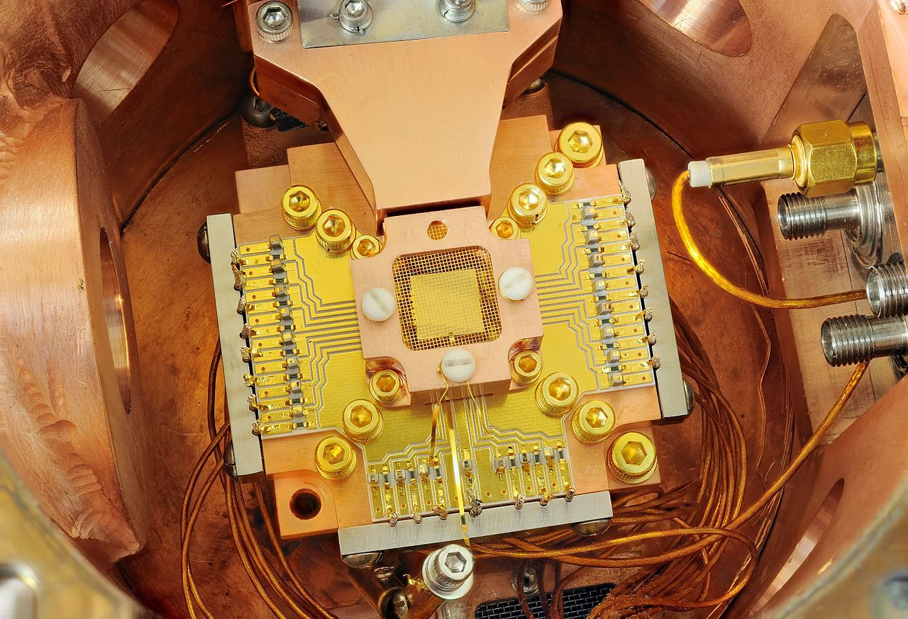

Quantum computers can improve many aspects of our lives. One example is faster optmization routes. For example, if a delivery truck had a long and complicated route, the quantum computer would be able to determine the shortest and most direct route.
With quantum technology, it is possible that quantum computers will be able to crack the cryptography we use today. Data encryption is a one way function. An algorithm encodes the data into a scrambled, unreadable version of the information. Sometimes the encoded infromation is so large that classical computers cannot decode the data. Shor's algorithm, which is a quantum algorithm, is used to factor these large numbers of encoded data and is much faster than a regular computer. This technology puts encrypted messages at risk. However, quantum computers are not large enough to perform this algorithm yet.
Quantum Computer Image: National Institute of Standards and Technology - CC0